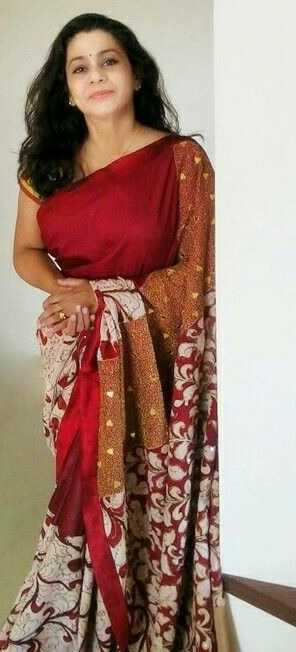
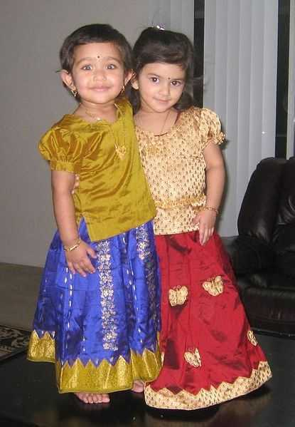
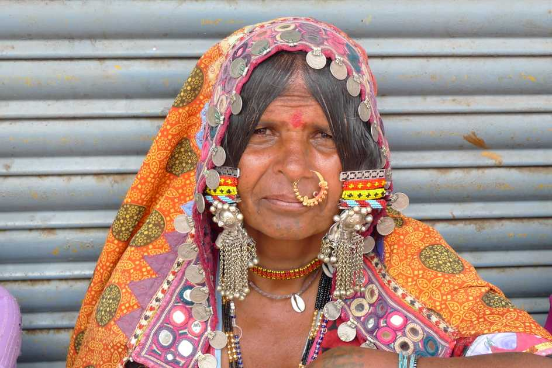

Kalamkari FabricKalamkari fabric is a type of cloth painted with mythological figures and stories. Natural dye is used to colour the fabric. Sarees, salwar kameez, dresses and other garments are made out of these fabrics. Kalamkari fabric is still produced in few districts of Andhra Pradesh. Some Sarees are also made with bidri artwork.
Andhra Pradesh is well known for its quality handloom industry. Women prefer to wear these original handloom sarees. Dharmavaram, Kanchi, Chirala, Mangalgiri, Venkatagiri towns have a worldwide reputation for their production of handlooms. Dharmavaram is famous for the production and distribution of silk sarees. Ikkat sarees woven in the Nalgonda district needs a weaving-pattern in which the yarn is randomly dyed in geometric or zigzag manners. Mangalgiri sarees are made of fine cotton. Gadwal sarees are also well known.
Women Before the 14th century, women in Andhra Pradesh wore dhotis, just like the men did. But over the years, the length of their dhoti kept on increasing and much later, they started using an additional piece of cloth to wrap over their shoulders. The additional piece of cloth later got stitch together to form a saree.
